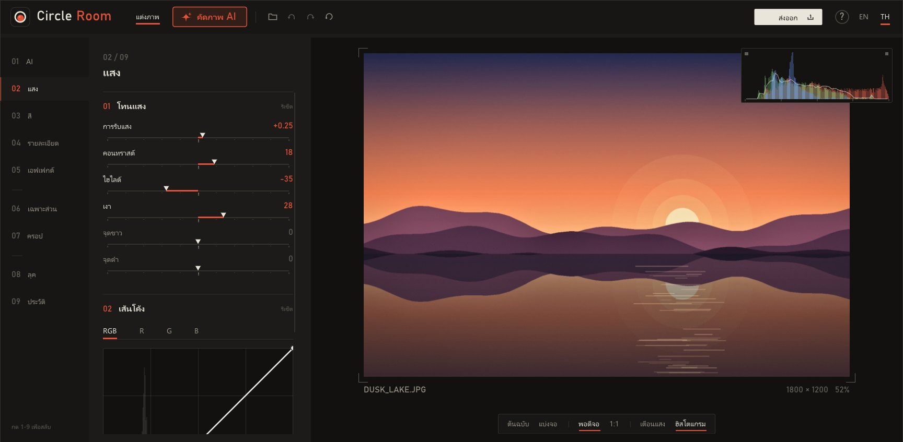

● Windows 10 / 11 · ฟรีFree · v1.0.2
ห้องมืดล้างรูปอยู่ในเครื่องคุณ Your darkroom,on your own PC.
แต่งแสงและสีบนการ์ดจอ เร็วจนลากสไลเดอร์แล้วเห็นผลทันที มี AI ช่วยคัดรูปเด็ดจากทั้งโฟลเดอร์ และกู้ท้องฟ้าที่ขาวโพลน ทุกอย่างประมวลผลในเครื่อง รูปไม่ถูกส่งขึ้นเน็ต Light and colour edits run on your graphics card, fast enough to see every slider move live. AI picks the keepers from a whole folder and rebuilds blown-out skies. Everything runs locally; your photos never leave the machine.
ดูเหมือนคุณเปิดจากมือถือหรือ Mac ตอนนี้ Circle Room ใช้ได้บน Windows เท่านั้น ส่งลิงก์นี้ไปเปิดในคอมพิวเตอร์ Windows ได้เลย Looks like you're on a phone or a Mac. Circle Room runs on Windows only for now; open this page on a Windows PC to download.

02 / ติดตั้งInstall
3 ขั้น
ไม่ถึงนาทีThree steps.
Under a minute.
กดปุ่มดาวน์โหลดClick download
ไฟล์ .zip จะไปอยู่ในโฟลเดอร์ Downloads ไม่ต้องสมัครหรือล็อกอินอะไรA .zip lands in your Downloads folder. No sign-up, no account.
คลิกขวา แล้วเลือก "Extract All"Right-click, "Extract All"
สำคัญ: ต้องแตกไฟล์ก่อน ถ้าเปิดจากใน zip ตรงๆ ระบบ AI จะหาไฟล์โมเดลไม่เจอImportant: unzip first. Run it from inside the zip and the AI tools can't find their models.
ดับเบิลคลิก CircleRoom.exeDouble-click CircleRoom.exe
ครั้งแรกจะมีทัวร์สั้นๆ สอนการใช้งาน ข้ามได้ และเปิดดูใหม่ได้ด้วยปุ่ม ? หรือ F1A short tour runs the first time. Skip it, or replay it later with ? or F1.
! ถ้าเจอหน้าจอสีฟ้านี้If you see this blue screen
ไม่ต้องตกใจ กด 2 ครั้งก็ผ่านDon't panic. Two clicks and you're through.
Windows จะเตือนโปรแกรมใหม่ที่ยังไม่มีลายเซ็นดิจิทัลแบบเสียเงิน ไม่ได้แปลว่ามีไวรัส ซอร์สโค้ดทั้งหมดเปิดให้ตรวจได้บน GitHubWindows flags new apps that don't carry a paid code-signing certificate. It doesn't mean malware, and every line of source is open on GitHub.
กด More info (①) แล้วกด Run anyway (②) ครั้งต่อไปจะไม่ถามอีกClick More info (①), then Run anyway (②). It won't ask again.
✓ ตรวจความปลอดภัยSafety check
ไม่มีแอนตี้ไวรัสตัวไหนแจ้งว่าอันตรายNo antivirus engine flagged it
เราส่ง CircleRoom.exe เวอร์ชัน 1.0.2 ให้ VirusTotal สแกนด้วยแอนตี้ไวรัส 71 ตัว ผลคือไม่พบอะไร (สแกนวันที่ 21 ต.ค. 2026) We sent CircleRoom.exe 1.0.2 to VirusTotal, which ran it past 71 antivirus engines. None flagged it (scanned 21 Oct 2026).
ดูรายงานบน VirusTotalOpen the VirusTotal reportอย่าเชื่อเราอย่างเดียว ตรวจเองได้ใน 1 นาทีDon't just take our word for it
เช็คว่าไฟล์ที่โหลดมาเป็นไฟล์เดียวกับที่สแกนCheck your file is the one we scanned
แตกไฟล์ zip แล้วคลิกขวาในโฟลเดอร์ เลือก "Open in Terminal" แล้ววางคำสั่งนี้ ตัวเลขที่ได้ต้องตรงกับ SHA-256 ด้านล่างทุกตัว Unzip, right-click inside the folder, choose "Open in Terminal" and paste this. The result must match the SHA-256 below exactly.
PowerShellGet-FileHash .\CircleRoom.exeCircleRoom.exedeae494e4c75c99a45aeaf4f380da7820ab683f253b708cf4629bac1ba6c3604สแกนเองอีกรอบScan it yourself
อัปโหลด CircleRoom.exe ที่คุณโหลดมาเองที่ virustotal.com ผลอาจต่างจากของเราเล็กน้อยเพราะฐานข้อมูลแอนตี้ไวรัสอัปเดตทุกวัน ถ้ามีตัวเดียวสองตัวแจ้งแบบ "Generic" หรือ "ML" มักเป็นการเดาจากโปรแกรมที่ไม่มีลายเซ็นดิจิทัล Upload the CircleRoom.exe you downloaded at virustotal.com. Results can drift as engines update daily; a lone "Generic" or "ML" hit is usually a guess about unsigned software.
เช็คไฟล์ zip ก่อนแตกก็ได้Or check the zip before unzipping
ใช้คำสั่งเดียวกันกับไฟล์ zip ในโฟลเดอร์ Downloads เช่น
Get-FileHash .\CircleRoom_Portable.zipSame command on the zip in Downloads, e.g.Get-FileHash .\CircleRoom_Portable.zipPortable.zipc5b2842d39094334938f51f5e9b95fd60ad52ed105e192ba7985bb1913f2ee79Lite.zipb31750a0ef2406db1b02c4964ece8a318c331cacf10e40828fcd3f097bed958d
โหลดจากเว็บนี้หรือ GitHub ของเรา เท่านั้น ถ้าได้ไฟล์มาจากที่อื่นและตัวเลขไม่ตรง อย่าเปิดไฟล์นั้น Only download from this page or our GitHub. If a copy from anywhere else doesn't match these numbers, don't run it.
03 / ก่อน · หลังBefore · after
ลากดูความต่างDrag to compare.
ภาพขวาส่งออกจาก Circle Room จริง ไม่ได้แต่งด้วยโปรแกรมอื่น ใช้แค่หน้า แสง สี และเอฟเฟกต์ ค่าที่ใช้คือ:The right half was exported by Circle Room itself, nothing else touched it. Just the Light, Colour and Effects pages:
ทำอะไรได้บ้างWhat it does
AI ทุกตัวทำงานในเครื่องEvery AI model runs on-deviceคัดภาพ AIAI Cull
โยนทั้งโฟลเดอร์เข้าไป AI ให้คะแนนความคม แสง องค์ประกอบ จับภาพถ่ายรัวที่ซ้ำกันไว้เป็นกลุ่ม แล้วโชว์เฉพาะ 10, 50 หรือ 100 ใบที่ดีที่สุด ค้นหาด้วยคำพูดก็ได้ เช่น "คนใส่แว่น" หรือ "ว่าวที่ชายหาด"Point it at a folder. AI scores sharpness, light and composition, groups burst shots, and shows only your best 10, 50 or 100. Search in plain words too, like "kite on the beach".
แต่งอัตโนมัติAuto edit
ดูออกว่าเป็นภาพคน ทิวทัศน์ อาหาร หรือกลางคืน แล้วปรับให้เหมาะกับฉาก ผลที่ได้เป็นค่าสไลเดอร์ธรรมดา แก้ต่อเองได้ทุกค่าTells a portrait from a landscape, food or a night shot and tunes for the scene. The result is plain slider values you can keep editing.
กู้ส่วนที่สว่างเกินRebuild blown highlights
ท้องฟ้าหรือหน้าที่ขาวจนไม่มีรายละเอียด ลดไฮไลต์ยังไงก็ได้แค่สีเทา ตัวนี้สร้างสีและพื้นผิวขึ้นมาใหม่ให้เข้ากับรอบข้างWhen a sky or a face clips to pure white, sliders only turn it grey. This rebuilds colour and texture that match the surroundings.
ปรับเฉพาะส่วนAdjust one part
AI แยกคน ท้องฟ้า ถนน ต้นไม้ น้ำ ให้เอง คลิกเดียวแล้วปรับแสงเฉพาะท้องฟ้า หรือทำให้คนสว่างขึ้นโดยไม่กระทบพื้นหลังAI separates people, sky, road, trees and water. One click to darken just the sky or lift just the people.
เบาจริงActually light
ตัวโปรแกรม 3 MB เปิดภาพ 24 ล้านพิกเซลแล้วใช้ RAM ราว 20 MB พรีวิวทุกเครื่องมือเปิดพร้อมกันใช้แค่ประมาณ 1 มิลลิวินาทีต่อเฟรมA 3 MB program. About 20 MB of RAM with a 24-megapixel photo open, and about 1 ms per frame with every tool switched on.
ไม่ทับไฟล์ต้นฉบับYour originals stay untouched
ค่าที่แต่งเก็บเป็นไฟล์เล็กๆ ข้างรูป เปิดรูปเดิมเมื่อไหร่ก็แต่งต่อได้ ย้อนกลับได้ทุกขั้นในหน้า ประวัติEdits live in a tiny file beside the photo. Reopen any time and carry on, or step back through History.
04 / สเปกSpecs
เครื่องที่ใช้ได้Will it run?
| ระบบSystem | Windows 10 / 11 (64-bit) |
| การ์ดจอGraphics | รองรับ OpenGL 3.3 (การ์ดจอเกือบทุกรุ่นตั้งแต่ปี 2010 รวมการ์ดจอในตัว)OpenGL 3.3 (almost anything since 2010, integrated GPUs included) |
| RAM | ว่าง 1 GB ตอนใช้ AI1 GB free while AI runs |
| พื้นที่Disk | ตัวเต็ม ~500 MB · รุ่นเล็ก 3 MBFull ~500 MB · Lite 3 MB |
| ไฟล์ภาพFormats | JPEG · PNG · TIFF · BMP |
| ภาษาLanguages | ไทย · English |
05 / คำถามที่เจอบ่อยFAQ
ถามก่อนโหลดBefore you download
ตัวเต็มกับรุ่นเล็กต่างกันยังไงFull or Lite?
รุ่นเล็ก (1.4 MB) มีเครื่องมือแต่งภาพครบทุกตัว แต่ไม่มี AI ส่วนตัวเต็ม (377 MB) มีโมเดล AI ทั้งหมด ถ้าไม่แน่ใจให้โหลดตัวเต็มLite (1.4 MB) has every editing tool but no AI. Full (377 MB) adds all the AI models. Not sure? Get Full.
ปลอดภัยไหม ทำไมมีคำเตือนIs it safe? Why the warning?
คำเตือนขึ้นเพราะโปรแกรมยังไม่มีใบรับรอง code signing แบบเสียเงิน ซอร์สโค้ดเปิดให้ทุกคนตรวจบน GitHub ไม่มีการเชื่อมต่ออินเทอร์เน็ตตอนใช้งาน และผลสแกน VirusTotal เป็น 0/71 ดูวิธีตรวจเองได้ที่ ส่วนตรวจความปลอดภัยThe warning appears because there's no paid code-signing certificate yet. All source is on GitHub, the app makes no network connections while you work, and VirusTotal reports 0/71. See how to check it yourself.
ต้องติดตั้งอะไรเพิ่มไหมDo I need to install anything else?
ไม่ต้อง ทุกอย่างอยู่ในโฟลเดอร์เดียว จะย้ายไปไว้ที่ไหนหรือใส่แฟลชไดรฟ์ก็ได้ อย่าวางไว้ใน C:\Program Files เพราะโปรแกรมต้องเซฟการตั้งค่าข้างตัวเองNo. It's one self-contained folder; move it anywhere, even a USB stick. Just avoid C:\Program Files, since settings are saved next to the app.
ใช้บน Mac หรือมือถือได้ไหมMac or phone?
ตอนนี้ยังไม่ได้ ใช้ได้เฉพาะ WindowsNot yet. Windows only for now.
เสียเงินไหมDoes it cost anything?
ฟรี ไลบรารีและโมเดล AI ทุกตัวในโปรแกรมใช้สัญญาแบบเปิด (MIT / Apache-2.0 และอื่นๆ) ดูข้อความฉบับเต็มได้ในโฟลเดอร์ LICENSES ที่มากับไฟล์ดาวน์โหลดFree. Every bundled library and AI model is under an open licence (MIT, Apache-2.0 and others); full texts ship in the LICENSES folder of the download.
06 / คนทำThe maker
ทำโดยคนเดียวกับที่สร้าง Circle ZoneMade by the person behind Circle Zone
Circle Room เป็นผลงานของ IAMPOOM ซึ่งก่อนหน้านี้สร้าง Circle Zone โมเดลภาษา AI ขนาดเล็กที่ออกแบบและเทรนเองตั้งแต่ศูนย์ คุยได้ทั้งภาษาไทยและอังกฤษ ไม่ได้ต่อยอดจากโมเดลของใคร Circle Room is by IAMPOOM, who also built Circle Zone: small Thai and English language models designed and trained from scratch, not fine-tuned from anyone else's model.
ทั้งสองโปรเจกต์ทำบนโน้ตบุ๊กการ์ดจอ RTX 4060 เครื่องเดียว แนวคิดเดียวกันคือ AI ที่ดีไม่จำเป็นต้องอยู่บนเซิร์ฟเวอร์ใหญ่ Both were made on a single RTX 4060 laptop, on the same idea: useful AI doesn't have to live in a data centre.
ผลงานทั้งหมดบน Hugging FaceAll work on Hugging FaceCircleZone 2.0
รุ่นล่าสุด 70.3 ล้านพารามิเตอร์ แชทแบบเป็นกันเองทั้งไทยและอังกฤษ ใช้กับ LM Studio, llama.cpp และ Ollama ได้ทันที The latest: 70.3M parameters, casual chat in Thai and English, runs in LM Studio, llama.cpp and Ollama.
CircleZone 1.0
รุ่นแรก 33 ล้านพารามิเตอร์ จุดเริ่มต้นของการทดลองว่าโมเดลที่เทรนบนคอมส่วนตัวได้ จะเรียนรู้ภาษาได้แค่ไหน The first: 33M parameters, the start of finding out how much language a model small enough for a personal PC can learn.